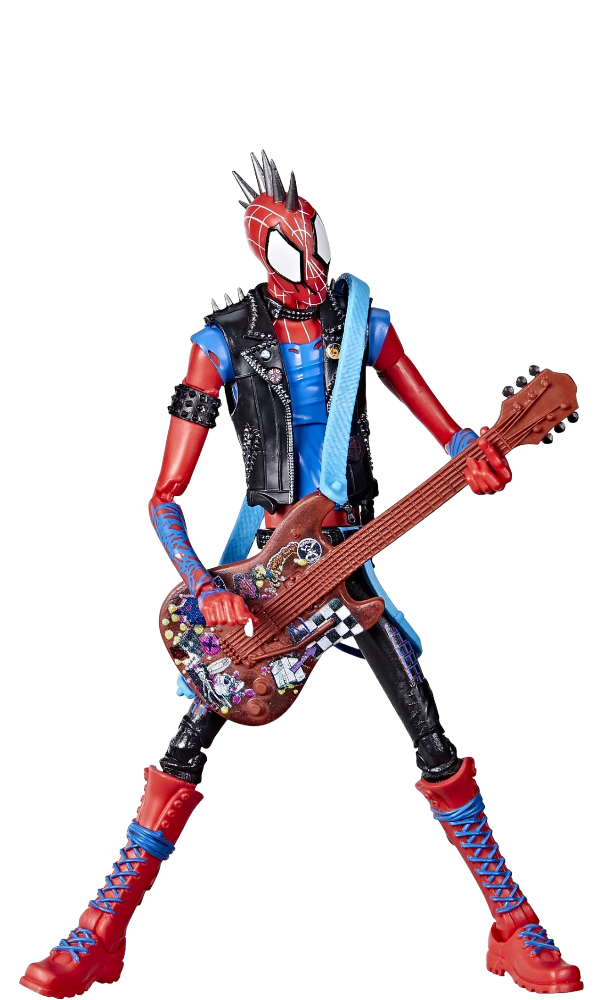

Ben Reilly, ook bekend als de Scarlet Spider, is een kloon van Peter Parker gecreëerd door de
Jackal.
Hij draagt een kenmerkend rood kostuum met een blauwe hoodie en heeft dezelfde krachten als
Spider-Man, inclusief bovenmenselijke kracht, snelheid en het vermogen om muren te beklimmen.
Aerphone GHTK
Ben Reilly, ook bekend als de Scarlet Spider, is een kloon van Peter Parker gecreëerd door de
Jackal.
Hij draagt een kenmerkend rood kostuum met een blauwe hoodie en heeft dezelfde krachten als
Spider-Man, inclusief bovenmenselijke kracht, snelheid en het vermogen om muren te beklimmen.
Ben is een complexe en tragische figuur, voortdurend op zoek naar zijn eigen identiteit en
plaats in de wereld.
Hij vecht om het nalatenschap van Spider-Man voort te zetten en bewijst keer op keer zijn waarde
als held.
Als Scarlet Spider is Ben een symbool van vastberadenheid en doorzettingsvermogen, en blijft hij
een belangrijk lid van de Spider-Verse.
Gwen Stacy
Spider-Woman
Gwen Stacy, een harmonie van gratie en kracht, beweegt zich moeiteloos door de schaduwen van de
stad.
Gekleed in een stralend wit pak met opvallende roze accenten, straalt ze zowel elegantie als
formidabele
vechtkunst uit.
Spider-Woman
Gwen Stacy, een harmonie van gratie en kracht, beweegt zich moeiteloos door de schaduwen van de
stad.
Gekleed in een stralend wit pak met opvallende roze accenten, straalt ze zowel elegantie als
formidabele
vechtkunst uit.
Met haar acrobatische vaardigheden en verfijnde spinnenwebben, vormt ze een sierlijke maar
dodelijke kracht
in het strijdtoneel.
Gwen's verleden is gehuld in geheimen en verlies, maar haar vastberadenheid om het kwaad te
bestrijden is
onwankelbaar.
Nu slingert ze door de neonverlichte straten van New York, beschermend en rechtvaardig,
op zoek naar verlossing en balans in haar dubbele leven.

Daniel Kaluuya
Spider-Punk
Spider-Punk, alias Hobart "Hobie" Brown, is een rebelse versie van Spider-Man uit een
alternatieve dimensie.
Hij draagt een punkrockkostuum met een mohawk en spijkerjasje en vecht tegen autoritaire
regimes.
Spider-Man 2099
Spider-Punk, alias Hobart "Hobie" Brown, is een rebelse versie van Spider-Man uit een
alternatieve dimensie.
Hij draagt een punkrockkostuum met een mohawk en spijkerjasje en vecht tegen autoritaire
regimes.
Met zijn gitaar als wapen en een onconventionele aanpak, staat Hobie symbool voor vrijheid en
verzet.
Zijn energieke persoonlijkheid en punkattitude maken hem een unieke en opvallende figuur in de
Spider-Verse.
Als Spider-Punk brengt hij een frisse wind van rebellie en vastberadenheid, en laat hij zien dat
de
identiteit van Spider-Man vele vormen kan aannemen.
Kimiko Glenn
Peni-Parker
Peni Parker, een jong technologisch wonderkind, bestuurt met ongeëvenaarde behendigheid haar
mechanische
Spider Society-suit.
Haar pak, een robuuste combinatie van rood en blauw, wordt geaccentueerd door stralende
neonlichten die haar
futuristische oorsprong benadrukken.
spider-Society
Peni Parker, een jong technologisch wonderkind, bestuurt met ongeëvenaarde behendigheid haar
mechanische
Spider Society-suit.
Haar pak, een robuuste combinatie van rood en blauw, wordt geaccentueerd door stralende
neonlichten die haar
futuristische oorsprong benadrukken.
Dankzij haar telepathische verbinding met de mechanische spin, verdedigt ze de stad met precisie
en
intelligentie.
Peni's verleden is doordrenkt van wetenschappelijke experimenten en een erfenis van
heldhaftigheid van haar
vader.
Nu zweeft ze boven de bruisende straten van New York,een symbool van technologie en moed,
vastberaden om de stad te beschermen terwijl ze haar eigen pad als heldin uitstippelt.
Nicolas Cage
Spider-Man Noir
Spider-Man Noir, gehuld in duisternis en mysterie, navigeert door de schaduwrijke steegjes van
een
alternatief New York.
Zijn kostuum, een sombere mix van diep zwart en dof grijs, reflecteert zijn donkere en
compromisloze aanpak
van misdaadbestrijding.
Aerphone GHTK
Spider-Man Noir, gehuld in duisternis en mysterie, navigeert door de schaduwrijke steegjes van
een
alternatief New York.
Zijn kostuum, een sombere mix van diep zwart en dof grijs, reflecteert zijn donkere en
compromisloze aanpak
van misdaadbestrijding.
Met zijn scherpzinnige detectivevaardigheden en ongeëvenaarde gevechtskunst, laat hij zijn
vijanden achter
in een waas van onzekerheid.
Spider-Man Noir's oorsprong is geweven in de schaduwen van een stad verstrikt in corruptie en
criminaliteit,
waar rechtvaardigheid schaars is.
Nu patrouilleert hij de verduisterde straten als een mysterieuze beschermer,
die de duisternis bestrijdt met vastberadenheid en een onwrikbaar geloof in gerechtigheid, in
een
eindeloze strijd voor een betere wereld.
Miles Morales
Spider-Man
Miles Morales, een fusie van menselijke vaardigheden en buitengewone krachten, vormt de
raadselachtige brug
tussen
twee werelden.
Spider-Man
Miles Morales, een fusie van menselijke vaardigheden en buitengewone krachten, vormt de
raadselachtige brug
tussen
twee werelden. Gekleed in een strak zwart-rood pak dat lijkt op het gestroomlijnde pantser van
een
spin,
blijft
zijn oorsprong een mysterie. Blauwe, gloeiende lijnen, een scherp contrast met de elektrische
pulsen
die
door zijn
lichaam stromen, vertellen het verhaal van de unieke krachten die hem transformeerden. Miles'
bestaan is
een
testament aan een buitengewone samensmelting, een experiment om het beste van beide realiteiten
te
verenigen. Nu
doorkruist hij de kleurrijke, chaotische straten van New York als een beschermer, die de wereld
verdedigt
tegen
chaos terwijl hij antwoorden zoekt over zijn ontstaan en doel.